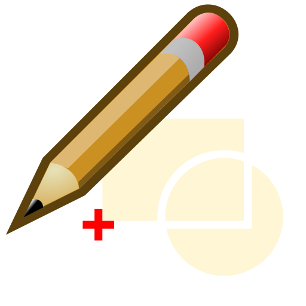
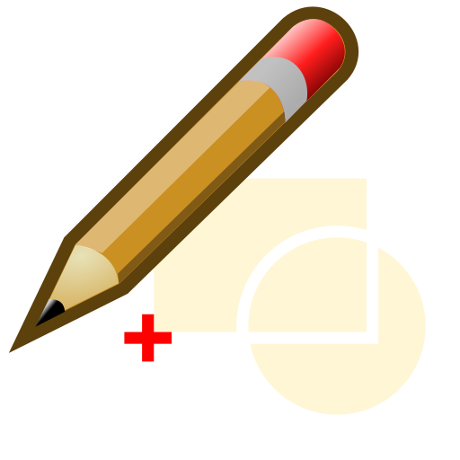
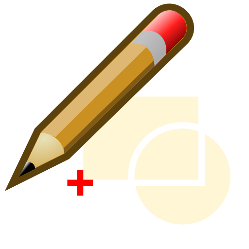

Menu: Blocco > Modifica blocco da un riferimento
Scorciatoia: B, D
Comandi: blockeditfromreference | bd

Descrizione:
Con questa funzione, è possibile modificare un blocco scegliendo un riferimento di blocco esistente. Questo è utile e di solito più veloce se non conoscete il nome del blocco da modificare.
Procedura:
Il blocco viene aperto per essere modificato. Per tornare al disegno principale (chiamato "*Spazio_modello"), attivate il blocco "*Spazio_modello" e fate click di nuovo sullo stesso pulsante per modificare il blocco o iniziate la funzione "Modifica il disegno principale" nel menu "Blocco".